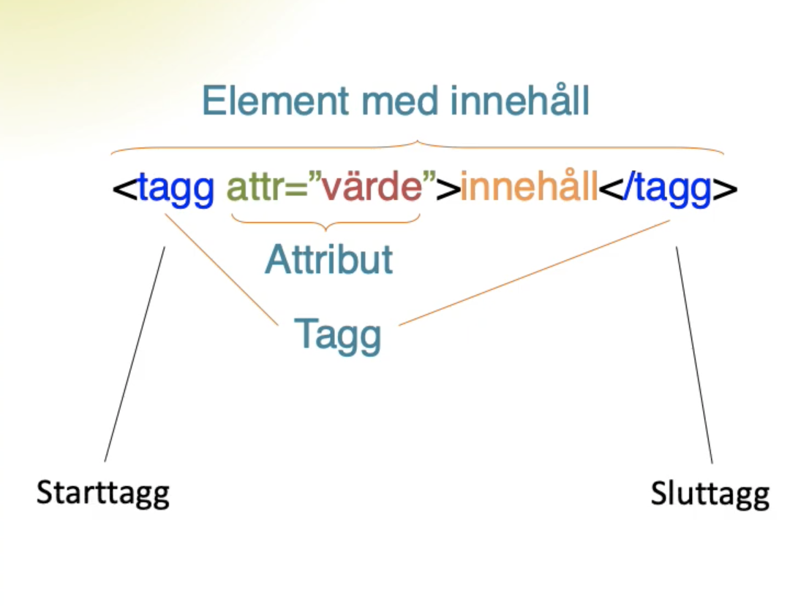

Element - Dessa hjälper till att strukturera och bygga upp webbplatsen. Exempelvis kan man bestämma textindelningar, skapa listor och länka till bilder med element. Varje element har en starttagg som börjar med <, vissa har också en sluttagg med >. Det finns element med innehåll, där innehållet kan vara exempelvis text, men också tomma element. I de tomma elementen finns bara en starttagg, ingen sluttagg. Exempel på dessa kan vara när man vill länka till en bildfil.
Tagg - Taggen bestämmer vad det är för typ av element och indikeras av tecknen < och >. Ofta finns en starttagg och en sluttagg som markerar för vad som förändringen gäller. Vill man exempelvis göra en text kursiv sätten man en starttagg precis framför och en sluttagg strax bakom orden som ska kursiveras.
Attribut - Finns ibland inom element och mellan taggar (skrivs som exempelvis attr= och type=, ibland med ett värde innanför citattecken) för att ge mer information, såsom länk till en webbplats eller länk till en bild.
Källa: Föreläsning F2a